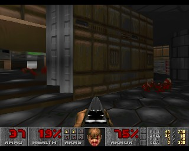
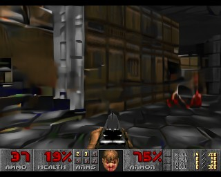
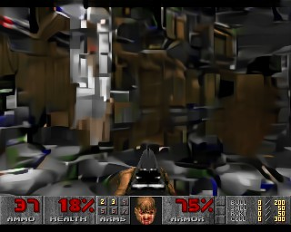
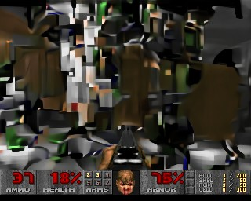
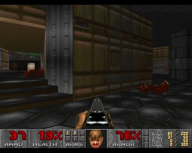
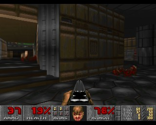
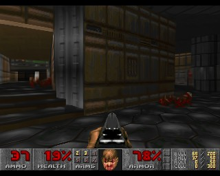
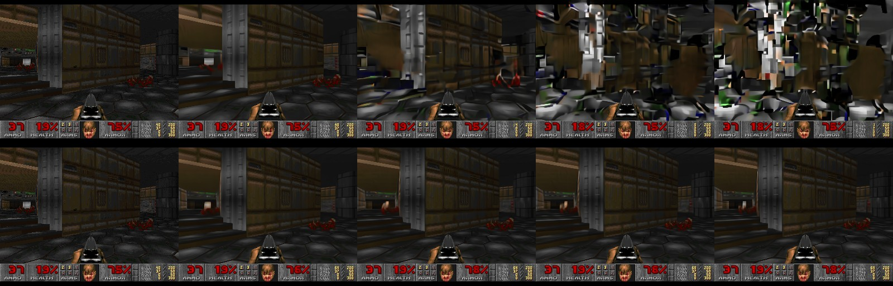
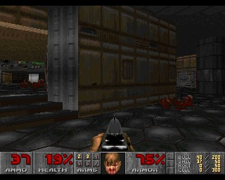
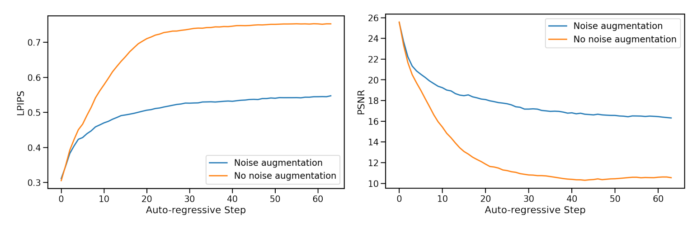

만들수록 오차가 쌓인다





논문 Fig. 4 · 노이즈 증강 없이 생성, 10프레임 간격
학습할 때teacher forcing


모델

오차 작음과거 프레임 = 게임의 진짜 화면
플레이할 때auto-regressive
모델
0번째 · 오차 ↑
과거 프레임 = 모델이 직접 만든 화면
(조금씩 틀림)
설명용 시뮬레이션
복사본의 복사본의 복사본…
여러분이라면 어떻게 고칠까요?

논문 Figure 4 · Auto-regressive drift (위: 노이즈 증강 없음, 아래: 있음)과거 프레임에 노이즈를 섞어서 학습
학습할 때 넣는 과거 프레임

+ 가우시안 노이즈 · 섞는 양은 매번 랜덤
노이즈 양 α = 0.00 → 구간 1/10
구간마다 임베딩을 학습해서 모델에 같이 입력
“앞서 만들어진 프레임의 정보를 바로잡을 수 있게 된다”Valevski et al., §3.2.1 “allows the network to correct information sampled in previous frames”
Diffusion노이즈 섞인 이미지 → 깨끗한 이미지
≈
GameNGen노이즈 섞인 과거 → 다음 프레임
같은 디노이징 아이디어를 과거 프레임에 적용
노이즈 증강 없음
노이즈 증강 있음
논문 Fig. 4 · 같은 장면, 10프레임 간격
PSNR = 실제 화면과 픽셀이 얼마나 비슷한지 (높을수록 좋음) · 논문 Fig. 7 재구성

논문 Figure 7 · 노이즈 증강의 효과 (LPIPS ↓, PSNR ↑)01/11
—
←→
100%
전체 보기 · 슬라이드를 누르면 이동 · O로 닫기
단축키
→ Space PgDn 다음 ← PgUp 이전
P 발표자 화면 O 전체 보기 F 전체화면 B 화면 끄기
G 논문 그림 Q Q&A 부록 M 저사양 모드 (3D 끔) R 타이머 리셋
3Enter 3번 슬라이드로 이동 Home/End 처음/끝